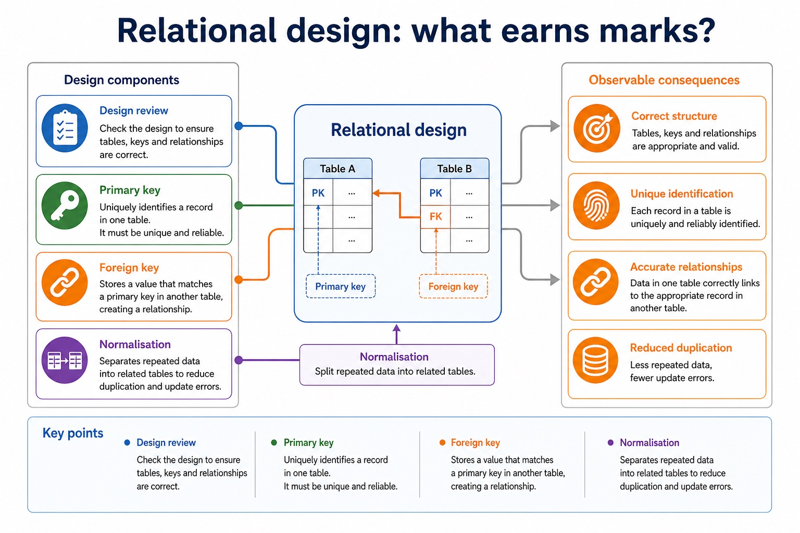
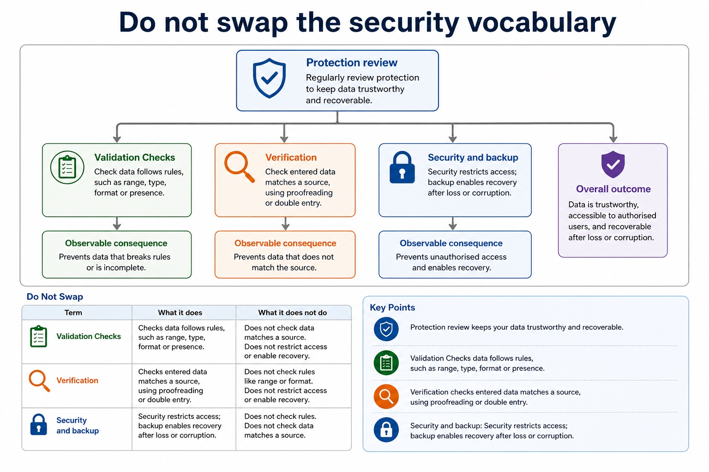
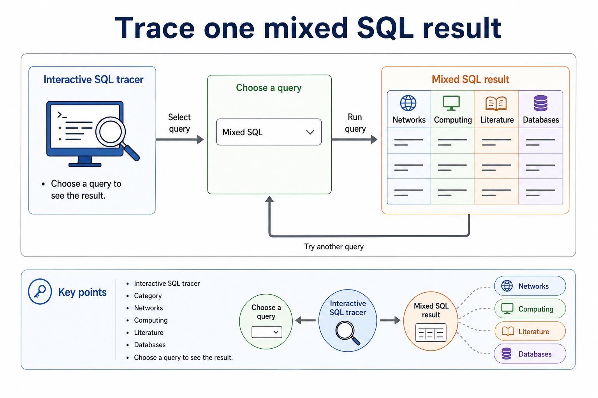

The first mark is often hidden in choosing the right toolbox.
This review lesson mixes relational database design, keys, normalisation, SQL and database protection.
The goal is not to reread notes politely. The goal is to identify the topic, answer with precise terms,
and repair weak responses into mark-worthy ones.
Recognisewhich Section 8 concept a question is testing
Applydesign rules, SQL clauses and protection controls to scenarios
Improveanswers using Cambridge-style marking language
Designentities, tables, keys, relationshipsQuerySELECT, WHERE, ORDER BY, GROUP BY, joinsChangeINSERT, UPDATE, DELETEProtectvalidation, verification, security, backup
Mixed questions are less scary when you label the tool before using it.
Why this matters
In review questions, students often know facts but answer the wrong topic. Topic recognition protects marks.
Common trap
Do not write generic benefits such as "faster" or "better". Explain the mechanism and consequence in the scenario.
Warm-up hook
Which mental toolbox should open first?
Reading a database question without identifying the topic is like opening every app on your laptop and hoping one of them writes SQL.
Choose any card to identify the topic first.
Retrieval map
Section 8 knowledge map
Data and DBMSdata vs information; DBMS roles; avoiding flat-file limitationsTables and keysrecords, fields, data types, constraints, primary keys and foreign keysDesignentity-relationship modelling and normalisation to reduce duplicationSQL retrievalSELECT, FROM, WHERE, ORDER BY, aggregates and joinsSQL modificationINSERT, UPDATE, DELETE, field/value matching and safe WHEREProtectionvalidation, verification, security controls, backups and restore testing
Primary keyUniquely identifies a record in one table. It must be unique and reliable.Foreign keyStores a value that matches a primary key in another table, creating a relationship.NormalisationSeparates repeated data into related tables to reduce duplication and update errors.
Chinese support: review = 复习；identify the topic = 识别题型；mechanism = 机制；consequence = 结果/影响。
Relational design: what earns marks?

Relational design: what earns marks?: source-grounded visual explanation.
Lesson fact: Design review
Lesson fact: Primary key Uniquely identifies a record in one table. It must be unique and reliable.
Lesson fact: Foreign key Stores a value that matches a primary key in another table, creating a relationship.
Lesson fact: Normalisation Separates repeated data into related tables to reduce duplication and update errors.
SQL review
SQL clauses: choose the clause that matches the request
Request clue
Use
Example
output fields
SELECT
SELECT Title, Borrower
filter rows
WHERE
WHERE Returned = FALSE
sort rows
ORDER BY
ORDER BY Price DESC
summary per group
GROUP BY
GROUP BY Category
related tables
join condition
Loan.BookID = Book.BookID
SQL clauses: choose the clause that matches the request
SQL clauses: choose the clause that matches the request: source-grounded visual explanation.
Lesson fact: SQL review
Lesson fact: Request clue
Lesson fact: output fields
Lesson fact: SELECT Title, Borrower
Lesson fact: filter rows
Lesson fact: WHERE Returned = FALSE
Lesson fact: sort rows
Lesson fact: ORDER BY
Lesson fact: ORDER BY Price DESC
Lesson fact: summary per group
Lesson fact: GROUP BY
Lesson fact: GROUP BY Category
Protection review
Do not swap the security vocabulary
ValidationChecks data follows rules, such as range, type, format or presence.VerificationChecks entered data matches a source, using proofreading or double entry.Security and backupSecurity restricts access; backup enables recovery after loss or corruption.
Do not swap the security vocabulary

Do not swap the security vocabulary: source-grounded visual explanation.
Lesson fact: Protection review
Lesson fact: Validation Checks data follows rules, such as range, type, format or presence.
Lesson fact: Verification Checks entered data matches a source, using proofreading or double entry.
Lesson fact: Security and backup Security restricts access; backup enables recovery after loss or corruption.
Interactive question classifier
Identify the topic before answering
Choose a clue and classify the topic.
Interactive SQL tracer
Trace one mixed SQL result
BookID
Title
Category
Copies
B01
Networks
Computing
4
B02
Poems
Literature
7
B03
Databases
Computing
3
B04
Drama
Literature
2
Choose a query to see the result.
Trace one mixed SQL result

Trace one mixed SQL result: source-grounded visual explanation.
Lesson fact: Interactive SQL tracer
Lesson fact: Category
Lesson fact: Networks
Lesson fact: Computing
Lesson fact: Literature
Lesson fact: Databases
Lesson fact: Choose a query to see the result.
Worked examples
Annotate where the marks are
Practice with instant checking
Mixed retrieval check
Type concise answers. Use Show answer after committing to a response.
Mistake debugging
Rewrite weak review answers
Exam-style questions
Original Cambridge-style stage review with expandable MS
These questions mix Section 8 topics. The mark schemes reward precise terms, method and scenario consequence.
Summary
Stage review checklist
Label the topicDesign, SQL, modification or protection.
Use exact termsPrimary key, foreign key, validation, verification, aggregate, join.
Give consequenceExplain what error is reduced, what data is protected or what output is produced.
Homework
Clear tasks for consolidation
Task 1: Retrieval gridCreate a 12-cell retrieval grid covering DBMS, keys, relationships, normalisation, SQL and data protection.Task 2: Timed SQLWrite one query using WHERE, one using ORDER BY, one using GROUP BY and one using a join.Task 3: Improve a weak answerRewrite: "Validation is good because it makes data correct." Include one named check, a mechanism and a limitation.